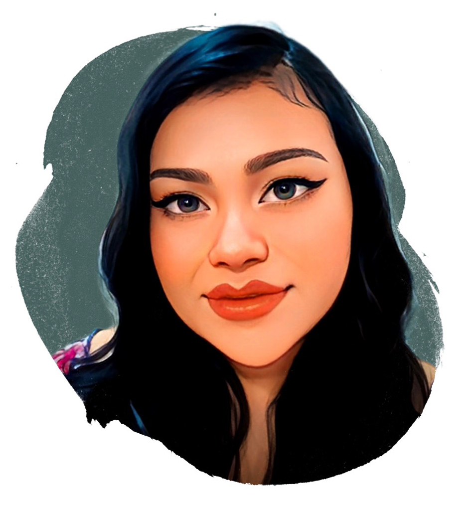

Cinthia Koutianov

Summary
I am an aspiring Frontend Developer.
Education
- Associate of Arts in Graphic Design
- Bachelor of Arts in Psychology
Work Experience
-
Specialist at Apple
October 2022 - January 2023
- Guided customers by advising , selling, and settubg up their new products;
- Performed other roles within the store - maintained visual merchandising or assisting team members;
- Stayed on top of news about products and initiatices, ready to apply my knowledge in custoner interactions.
-
Workflow Coordinator at IBM
October 2017 - August 2021
- Spearheaded achievement of Service Level Agreement goals by dispatching 250 tickets daily, leading service audits, and monitored High Priority Incidents to drive 95%-98% prompt resolution;
- Crafted and implemented strategic solutions to remedy outstanding ticket management issues;
- Innovated a system, which was ultimetely adopted and rolled out accross the entire team, to record and track all ticket routing assignments to provide real-time insight into ticket status.
-
Analyst at HCL, America
April 2015 - September 2017
- Streamlined project execution by leading project scheduling for over 1,000 users to migrate to Win7;
- Successfully audited all service tickets and assisted 60 Technicians with customer contact and technical ticket management.
Skills
- Customer Service ⭐️⭐️⭐️⭐️⭐️
- Adobe Creative Suite ⭐️⭐️⭐️⭐️⭐️
- Figma ⭐️⭐️⭐️⭐️⭐️
- Responsive Web Development ⭐️⭐️⭐️⭐️⭐️
Certifications
- SheCodes Frontend Development
- Google UX Design
Other